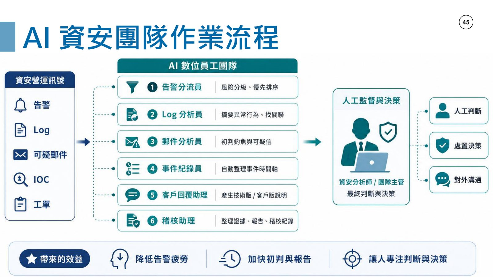
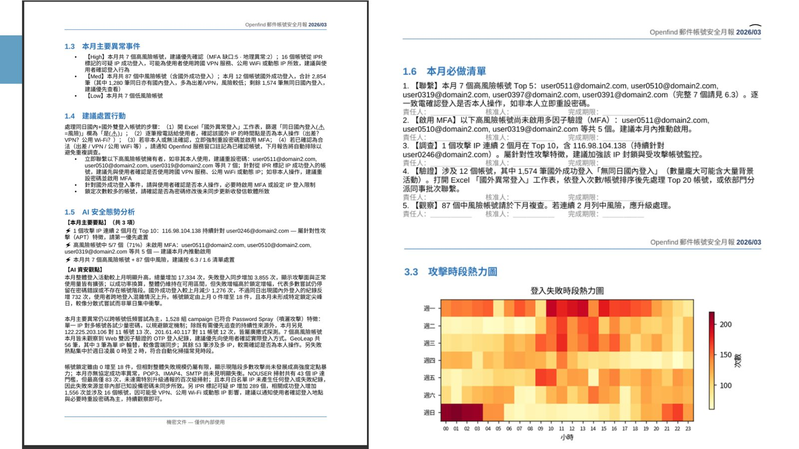

摘要
本場演講由 Openfind 網擎資訊雲端服務資深副總經理張嘉淵主講，以美國空軍 CCT（Combat Controller）Robert Gutierrez Jr. 在阿富汗執行前線協調空中支援任務的故事為引，比擬 AI 時代的「前線部署工程師」（FDE, Forward Deployed Engineer）角色，說明企業導入 AI 員工時必須像 HR 管理人力一樣管理 AI Agent，並分享 Openfind 如何運用 AI 資安團隊重新定義郵件資安防禦的實務做法。
重點整理
- 講者以美國空軍 CCT Robert Gutierrez Jr. 2009 年在阿富汗執行 JTAC 前線協調空中支援任務的真實故事，比擬 AI 時代「離問題最近、有能力把 AI 帶入工作現場」的 FDE（Forward Deployed Engineer）角色
- 提出「AI 時代的第一步：每個 IT 都要先把自己當成 HR」，因為 AI Agent 就像新員工，需要定義工作、訓練、開權限、設定 KPI、檢查與決定停用等生命週期管理
- IT 管理 AI Agent 時應自問：讓哪個 AI 員工接手哪段工作、主管是誰、能看哪些資料、不能做哪些事、由誰審核對錯、績效如何衡量
- 強調「可控，AI 才能擴大；可追蹤，AI 才能被信任」，關鍵在於權限底線、責任底線、稽核底線三大底線
- Openfind 建立 AI 資安團隊，其中「郵件分析員」作為 SOC 郵件安全防線的第一線初判者，負責拆解可疑郵件、分類、提供證據與建議、產生報告後交由真人裁決，並搭配「無人軟體工廠」加速防禦能力迭代
重點圖片／架構圖


從戰場前線到 AI 時代的 FDE
演講以美國空軍 CCT（Combat Controller）Robert Gutierrez Jr. 在 2009 年 10 月 5 日於阿富汗執行 JTAC（Joint Terminal Attack Controller）任務、負責前線協調空中支援的真實故事開場，並提問「AI 時代的 Robert 在哪」，帶出「你不一定在戰場上，但你可能就是公司裡那個站在前線的人」的類比。演講引入 FDE（Forward Deployed Engineer，前線部署工程師）這個近期興起的職務概念（引用 2026 年 5 月 Business Insider 報導），定義為「離問題近、有能力把 AI 帶入工作現場的人」。
AI 時代的第一步：IT 要把自己當成 HR
講者指出 FDE 帶到前線的不只是 AI 工具，而是「付錢（買 Token）就可以請到的數位員工」。新員工到任時，組織需要先回答「誰來幫他定義工作、誰來訓練他、誰來開權限、誰來設定 KPI、誰來檢查他有沒有亂做事、誰來決定他什麼時候該停用」等問題，因此提出「AI 時代的第一步：每個 IT 都要先把自己當成 HR」的核心觀點，並列出人與 AI Agent 管理上的對應關係：人要有職務說明，AI 也要有任務邊界；人要到職訓練，AI 也要賦予技能；人要授權，AI 更要管控權限；人要績效考核，AI 也要衡量產出；人離職要關帳號，AI 停用也要 Offboarding。
可控、可追蹤的 AI Agent 管理框架
演講強調「可控，AI 才能擴大；可追蹤，AI 才能被信任」，核心在於權限底線、責任底線與稽核底線三大底線。IT 在管理 AI Agent 時應自問：我們要讓哪個 AI 員工接手哪段工作、它的主管是誰、它能看哪些資料、它不能做哪些事、它做對或做錯時由誰審核、它的績效怎麼衡量。演講並以「AI 員工生命週期」的概念，說明組織需要從「HR 管人」進化到「IT 管數位員工」，強調唯有可信任的 AI 開始上班，組織才開始真正升級。
Openfind：郵件領域在台灣場域的 FDE 實務
Openfind 以自身作為郵件領域在台灣場域的 FDE 為例，分享如何用 AI 重新定義資安防禦的做法，建立了完整的 AI 資安團隊作業流程，並為每位 AI 資安團隊成員定位其職責、KPI 與紅線（不可逾越的操作邊界）。其中「郵件分析員」扮演 SOC 郵件安全防線的第一線初判者角色：負責拆解可疑郵件、提供分類、證據與建議，並產生報告，最終交由真人裁決，體現了人機協作、AI 輔助但保留人類最終決策權的治理模式。
AI 資安團隊 × 無人軟體工廠
演講進一步介紹「AI 資安團隊 × 無人軟體工廠」的協作模式，讓防禦能力能夠快速迭代：由資安團隊出題，交由無人軟體工廠承接任務清單並自動化產出防禦能力，藉此提供給客戶更快速、更具彈性的資安防護效益。演講最後總結為「明天開始，就從這 5 件事開始」的行動建議，呼應整場演講從故事類比到實務落地的完整脈絡。